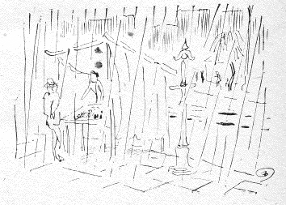
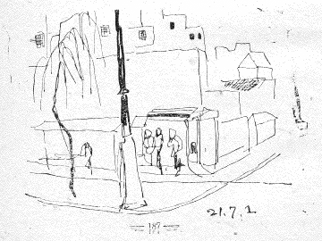

銀座の柳
木村荘八
昔の面影を偲ぶやうな今の東京の材料をとの意向だが、存外はづれの「淀橋」といつたやうなところにその「昔の面影」があるやうである。しかし「昔」もこれはまた「大昔」であつて、戦災であたりが広漠となつたために、むかし武蔵野の野川であつた頃にはこの辺かくもあつたらうかと思はせる、早くいへば、地形的回顧を人に与へるものがある。
――それでは余り「昔」すぎるだらう。
七月一日（昭和廿一年頃）、とりあへず銀座へ出て見た。しかし銀座あたりの「昔」は、よしんば、その形骸が備はつてゐようとも、大正震災この方三変四変してゐるから、遠い回顧の跡は無い。まして今度の変で銀座はまた全然新規のものになつてしまふ様子だ。

昔は「銀座の夜店」といつたが、近頃ではその夜店が昼店に変つたやうである。店構への様子は前と同じであるが、却つて夜は早仕舞ひになるのは、当分これが戦災後の世相か。
昼頃までは晴れてゐた空が午後から雨模様になつてゐた折柄、一丁目から歩道を歩いてゐるうちに、雨足繁く、夕立になつて来た、露店商人が急に店の取片付けも成らず、テント張りのまゝぬれてゐる午下りの景色は、これまで見かけないものである。斜向うの電車道を越した通りを見ると、片屋根のスマートな、しかし見るからに植民地風な――店舗の飾窓の凹みに、三々五々人が雨宿りに駈込んで空の様子を見てゐる。柳がひよろひよろと雨の中に立つて新芽をつけてゐる。

結局柳だけが昔と変らない銀座風景だつたかもしれない。
●表記について
- このファイルは W3C 勧告 XHTML1.1 にそった形式で作成されています。